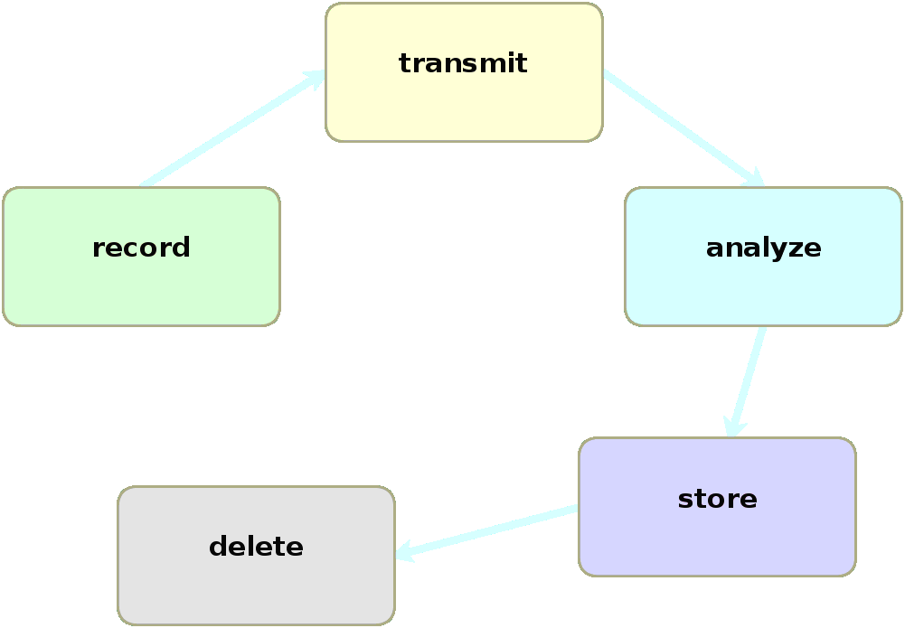

a log of hope

@jordansissel
DreamHost
who am I?
- logstasher
- hacker
- sysadmin
my other stuff
a story
and how everything went wrong.108.166.15.188 - - [13/Sep/2012:02:34:22 -0400] "GET /files/logstash/logstash-1.1.0-monolithic.jar HTTP/1.1" 200 40923996 "-" "Chef Client/0.10.8 (ruby-1.9.3-p0; ohai-0.6.10; x86_64-linux; +http://opscode.com)"
50.56.197.244 - - [13/Sep/2012:02:34:37 -0400] "GET / HTTP/1.1" 200 41687 "-" "Mozilla/4.0 (compatible; MSIE 5.0; Windows NT; DigExt; DTS Agent"
89.96.171.210 - - [13/Sep/2012:02:32:49 -0400] "GET /files/logstash/logstash-1.1.0-monolithic.jar HTTP/1.1" 200 40923996 "-" "Chef Client/0.10.10 (ruby-1.9.3-p194; ohai-0.6.4; amd64-freebsd8; +http://opscode.com)"
37.57.128.238 - - [13/Sep/2012:02:37:24 -0400] "GET / HTTP/1.1" 200 41687 "-" "Mozilla/4.0 (compatible; MSIE 5.0; Windows NT; DigExt; DTS Agent"
199.21.99.109 - - [13/Sep/2012:02:38:12 -0400] "GET /blog/tags/packaging HTTP/1.1" 200 15152 "-" "Mozilla/5.0 (compatible; YandexBot/3.0; +http://yandex.com/bots)"
180.76.6.232 - - [13/Sep/2012:02:38:23 -0400] "GET /blog/tags/wrt54gl HTTP/1.1" 200 8867 "-" "Mozilla/5.0 (compatible; Baiduspider/2.0; +http://www.baidu.com/search/spider.html)"
217.227.233.68 - - [13/Sep/2012:02:38:25 -0400] "GET /articles/ssh-security/ HTTP/1.1" 200 16543 "-" "Mozilla/5.0 (X11; Linux x86_64; rv:15.0) Gecko/20100101 Firefox/15.0"
217.227.233.68 - - [13/Sep/2012:02:38:26 -0400] "GET /reset.css HTTP/1.1" 200 1015 "http://www.semicomplete.com/articles/ssh-security/" "Mozilla/5.0 (X11; Linux x86_64; rv:15.0) Gecko/20100101 Firefox/15.0"
217.227.233.68 - - [13/Sep/2012:02:38:26 -0400] "GET /style2.css HTTP/1.1" 200 4877 "http://www.semicomplete.com/articles/ssh-security/" "Mozilla/5.0 (X11; Linux x86_64; rv:15.0) Gecko/20100101 Firefox/15.0"
217.227.233.68 - - [13/Sep/2012:02:38:26 -0400] "GET /images/jordan-80.png HTTP/1.1" 200 6146 "http://www.semicomplete.com/articles/ssh-security/" "Mozilla/5.0 (X11; Linux x86_64; rv:15.0) Gecko/20100101 Firefox/15.0"
217.227.233.68 - - [13/Sep/2012:02:38:31 -0400] "GET /images/web/2009/banner.png HTTP/1.1" 200 52315 "http://www.semicomplete.com/style2.css" "Mozilla/5.0 (X11; Linux x86_64; rv:15.0) Gecko/20100101 Firefox/15.0"
184.73.137.50 - - [13/Sep/2012:02:38:28 -0400] "GET /files/logstash/logstash-1.1.1-monolithic.jar HTTP/1.1" 200 53813805 "-" "Chef Client/0.10.8 (ruby-1.8.7-p334; ohai-0.6.10; i686-linux; +http://opscode.com)"
24.24.235.59 - - [13/Sep/2012:02:38:46 -0400] "GET /kibana/ HTTP/1.1" 200 4483 "http://news.ycombinator.com/item?id=4417660" "Mozilla/5.0 (Windows NT 6.1; WOW64) AppleWebKit/537.1 (KHTML, like Gecko) Chrome/21.0.1180.89 Safari/537.1"
24.24.235.59 - - [13/Sep/2012:02:38:46 -0400] "GET /kibana/bootstrap/css/bootstrap-responsive.min.css HTTP/1.1" 200 7680 "http://semicomplete.com/kibana/" "Mozilla/5.0 (Windows NT 6.1; WOW64) AppleWebKit/537.1 (KHTML, like Gecko) Chrome/21.0.1180.89 Safari/537.1"
24.24.235.59 - - [13/Sep/2012:02:38:46 -0400] "GET /kibana/css/style.css HTTP/1.1" 200 2715 "http://semicomplete.com/kibana/" "Mozilla/5.0 (Windows NT 6.1; WOW64) AppleWebKit/537.1 (KHTML, like Gecko) Chrome/21.0.1180.89 Safari/537.1"
24.24.235.59 - - [13/Sep/2012:02:38:46 -0400] "GET /kibana/css/jquery.ui.datepicker.css HTTP/1.1" 200 33035 "http://semicomplete.com/kibana/" "Mozilla/5.0 (Windows NT 6.1; WOW64) AppleWebKit/537.1 (KHTML, like Gecko) Chrome/21.0.1180.89 Safari/537.1"
24.24.235.59 - - [13/Sep/2012:02:38:46 -0400] "GET /kibana/js/lib/excanvas.min.js HTTP/1.1" 200 19415 "http://semicomplete.com/kibana/" "Mozilla/5.0 (Windows NT 6.1; WOW64) AppleWebKit/537.1 (KHTML, like Gecko) Chrome/21.0.1180.89 Safari/537.1"
24.24.235.59 - - [13/Sep/2012:02:38:46 -0400] "GET /kibana/bootstrap/css/bootstrap.min.css HTTP/1.1" 200 71463 "http://semicomplete.com/kibana/" "Mozilla/5.0 (Windows NT 6.1; WOW64) AppleWebKit/537.1 (KHTML, like Gecko) Chrome/21.0.1180.89 Safari/537.1"
24.24.235.59 - - [13/Sep/2012:02:38:46 -0400] "GET /kibana/js/lib/jquery.history.js HTTP/1.1" 200 6466 "http://semicomplete.com/kibana/" "Mozilla/5.0 (Windows NT 6.1; WOW64) AppleWebKit/537.1 (KHTML, like Gecko) Chrome/21.0.1180.89 Safari/537.1"
24.24.235.59 - - [13/Sep/2012:02:38:46 -0400] "GET /kibana/css/jquery-ui-1.8.16.custom.css HTTP/1.1" 200 50829 "http://semicomplete.com/kibana/" "Mozilla/5.0 (Windows NT 6.1; WOW64) AppleWebKit/537.1 (KHTML, like Gecko) Chrome/21.0.1180.89 Safari/537.1"
24.24.235.59 - - [13/Sep/2012:02:38:46 -0400] "GET /kibana/js/lib/jquery.flot.min.js HTTP/1.1" 200 37554 "http://semicomplete.com/kibana/" "Mozilla/5.0 (Windows NT 6.1; WOW64) AppleWebKit/537.1 (KHTML, like Gecko) Chrome/21.0.1180.89 Safari/537.1"
24.24.235.59 - - [13/Sep/2012:02:38:46 -0400] "GET /kibana/js/lib/jquery.flot.selection.min.js HTTP/1.1" 200 3532 "http://semicomplete.com/kibana/" "Mozilla/5.0 (Windows NT 6.1; WOW64) AppleWebKit/537.1 (KHTML, like Gecko) Chrome/21.0.1180.89 Safari/537.1"
24.24.235.59 - - [13/Sep/2012:02:38:46 -0400] "GET /kibana/js/lib/jquery.smartresize.js HTTP/1.1" 200 1123 "http://semicomplete.com/kibana/" "Mozilla/5.0 (Windows NT 6.1; WOW64) AppleWebKit/537.1 (KHTML, like Gecko) Chrome/21.0.1180.89 Safari/537.1"
24.24.235.59 - - [13/Sep/2012:02:38:46 -0400] "GET /kibana/js/lib/iso8601.min.js HTTP/1.1" 200 486 "http://semicomplete.com/kibana/" "Mozilla/5.0 (Windows NT 6.1; WOW64) AppleWebKit/537.1 (KHTML, like Gecko) Chrome/21.0.1180.89 Safari/537.1"
24.24.235.59 - - [13/Sep/2012:02:38:46 -0400] "GET /kibana/js/lib/safebase64.js HTTP/1.1" 200 3264 "http://semicomplete.com/kibana/" "Mozilla/5.0 (Windows NT 6.1; WOW64) AppleWebKit/537.1 (KHTML, like Gecko) Chrome/21.0.1180.89 Safari/537.1"
24.24.235.59 - - [13/Sep/2012:02:38:46 -0400] "GET /kibana/js/lib/jquery.min.js HTTP/1.1" 200 93868 "http://semicomplete.com/kibana/" "Mozilla/5.0 (Windows NT 6.1; WOW64) AppleWebKit/537.1 (KHTML, like Gecko) Chrome/21.0.1180.89 Safari/537.1"
24.24.235.59 - - [13/Sep/2012:02:38:47 -0400] "GET /kibana/js/lib/json2.js HTTP/1.1" 200 17541 "http://semicomplete.com/kibana/" "Mozilla/5.0 (Windows NT 6.1; WOW64) AppleWebKit/537.1 (KHTML, like Gecko) Chrome/21.0.1180.89 Safari/537.1"
24.24.235.59 - - [13/Sep/2012:02:38:47 -0400] "GET /kibana/js/ajax.js HTTP/1.1" 200 37584 "http://semicomplete.com/kibana/" "Mozilla/5.0 (Windows NT 6.1; WOW64) AppleWebKit/537.1 (KHTML, like Gecko) Chrome/21.0.1180.89 Safari/537.1"
24.24.235.59 - - [13/Sep/2012:02:38:46 -0400] "GET /kibana/js/lib/jquery-ui-timepicker-addon.js HTTP/1.1" 200 50902 "http://semicomplete.com/kibana/" "Mozilla/5.0 (Windows NT 6.1; WOW64) AppleWebKit/537.1 (KHTML, like Gecko) Chrome/21.0.1180.89 Safari/537.1"
24.24.235.59 - - [13/Sep/2012:02:38:46 -0400] "GET /kibana/js/lib/jquery.ui.datepicker.js HTTP/1.1" 200 76332 "http://semicomplete.com/kibana/" "Mozilla/5.0 (Windows NT 6.1; WOW64) AppleWebKit/537.1 (KHTML, like Gecko) Chrome/21.0.1180.89 Safari/537.1"
24.24.235.59 - - [13/Sep/2012:02:38:47 -0400] "GET /kibana/bootstrap/js/bootstrap-dropdown.js HTTP/1.1" 200 2558 "http://semicomplete.com/kibana/" "Mozilla/5.0 (Windows NT 6.1; WOW64) AppleWebKit/537.1 (KHTML, like Gecko) Chrome/21.0.1180.89 Safari/537.1"
24.24.235.59 - - [13/Sep/2012:02:38:47 -0400] "GET /kibana/bootstrap/js/bootstrap.js HTTP/1.1" 200 47395 "http://semicomplete.com/kibana/" "Mozilla/5.0 (Windows NT 6.1; WOW64) AppleWebKit/537.1 (KHTML, like Gecko) Chrome/21.0.1180.89 Safari/537.1"
24.24.235.59 - - [13/Sep/2012:02:38:47 -0400] "GET /kibana/js/lib/jquery.ui.accordion.js HTTP/1.1" 200 16265 "http://semicomplete.com/kibana/" "Mozilla/5.0 (Windows NT 6.1; WOW64) AppleWebKit/537.1 (KHTML, like Gecko) Chrome/21.0.1180.89 Safari/537.1"
24.24.235.59 - - [13/Sep/2012:02:38:46 -0400] "GET /kibana/js/lib/jquery-ui-1.8.16.custom.min.js HTTP/1.1" 200 196695 "http://semicomplete.com/kibana/" "Mozilla/5.0 (Windows NT 6.1; WOW64) AppleWebKit/537.1 (KHTML, like Gecko) Chrome/21.0.1180.89 Safari/537.1"
24.24.235.59 - - [13/Sep/2012:02:38:47 -0400] "GET /kibana/loader2.php?page=eyJzZWFyY2giOiIiLCJmaWVsZHMiOlsiIl0sIm9mZnNldCI6MCwidGltZWZyYW1lIjoiNDggaG91cnMiLCJncmFwaG1vZGUiOiJjb3VudCIsInN0YW1wIjoxMzQ1NjQ3NjQ3ODU5fQ==&_=1347518472674 HTTP/1.1" 200 576 "http://semicomplete.com/kibana/" "Mozilla/5.0 (Windows NT 6.1; WOW64) AppleWebKit/537.1 (KHTML, like Gecko) Chrome/21.0.1180.89 Safari/537.1"
24.24.235.59 - - [13/Sep/2012:02:38:47 -0400] "GET /kibana/images/logo.png HTTP/1.1" 200 1051 "http://semicomplete.com/kibana/" "Mozilla/5.0 (Windows NT 6.1; WOW64) AppleWebKit/537.1 (KHTML, like Gecko) Chrome/21.0.1180.89 Safari/537.1"
24.24.235.59 - - [13/Sep/2012:02:38:47 -0400] "GET /kibana/css/images/ui-icons_222222_256x240.png HTTP/1.1" 200 4369 "http://semicomplete.com/kibana/" "Mozilla/5.0 (Windows NT 6.1; WOW64) AppleWebKit/537.1 (KHTML, like Gecko) Chrome/21.0.1180.89 Safari/537.1"
24.24.235.59 - - [13/Sep/2012:02:38:47 -0400] "GET /kibana/images/kibana_banner.png HTTP/1.1" 200 16930 "http://semicomplete.com/kibana/" "Mozilla/5.0 (Windows NT 6.1; WOW64) AppleWebKit/537.1 (KHTML, like Gecko) Chrome/21.0.1180.89 Safari/537.1"
24.24.235.59 - - [13/Sep/2012:02:38:47 -0400] "GET /kibana/images/feed.png HTTP/1.1" 200 689 "http://semicomplete.com/kibana/" "Mozilla/5.0 (Windows NT 6.1; WOW64) AppleWebKit/537.1 (KHTML, like Gecko) Chrome/21.0.1180.89 Safari/537.1"
24.24.235.59 - - [13/Sep/2012:02:38:47 -0400] "GET /kibana/images/csv.gif HTTP/1.1" 200 154 "http://semicomplete.com/kibana/" "Mozilla/5.0 (Windows NT 6.1; WOW64) AppleWebKit/537.1 (KHTML, like Gecko) Chrome/21.0.1180.89 Safari/537.1"
24.24.235.59 - - [13/Sep/2012:02:38:47 -0400] "GET /kibana/images/stream.png HTTP/1.1" 200 569 "http://semicomplete.com/kibana/" "Mozilla/5.0 (Windows NT 6.1; WOW64) AppleWebKit/537.1 (KHTML, like Gecko) Chrome/21.0.1180.89 Safari/537.1"
24.24.235.59 - - [13/Sep/2012:02:38:47 -0400] "GET /kibana/images/ajax-loader.gif HTTP/1.1" 200 723 "http://semicomplete.com/kibana/" "Mozilla/5.0 (Windows NT 6.1; WOW64) AppleWebKit/537.1 (KHTML, like Gecko) Chrome/21.0.1180.89 Safari/537.1"
24.24.235.59 - - [13/Sep/2012:02:38:47 -0400] "GET /kibana/favicon.ico HTTP/1.1" 200 4286 "-" "Mozilla/5.0 (Windows NT 6.1; WOW64) AppleWebKit/537.1 (KHTML, like Gecko) Chrome/21.0.1180.89 Safari/537.1"
24.24.235.59 - - [13/Sep/2012:02:38:55 -0400] "GET /kibana/loader2.php?page=eyJzZWFyY2giOiIiLCJmaWVsZHMiOlsiIl0sIm9mZnNldCI6MCwidGltZWZyYW1lIjoiYWxsIiwiZ3JhcGhtb2RlIjoiY291bnQiLCJzdGFtcCI6MTM0NzUxODQ4MDExOX0=&_=1347518480123 HTTP/1.1" 200 580 "http://semicomplete.com/kibana/" "Mozilla/5.0 (Windows NT 6.1; WOW64) AppleWebKit/537.1 (KHTML, like Gecko) Chrome/21.0.1180.89 Safari/537.1"
24.24.235.59 - - [13/Sep/2012:02:38:56 -0400] "GET /kibana/loader2.php?page=eyJzZWFyY2giOiIiLCJmaWVsZHMiOlsiIl0sIm9mZnNldCI6MCwidGltZWZyYW1lIjoiNDggaG91cnMiLCJncmFwaG1vZGUiOiJjb3VudCIsInN0YW1wIjoxMzQ1NjQ3NjQ3ODU5fQ==&_=1347518481745 HTTP/1.1" 200 576 "http://semicomplete.com/kibana/" "Mozilla/5.0 (Windows NT 6.1; WOW64) AppleWebKit/537.1 (KHTML, like Gecko) Chrome/21.0.1180.89 Safari/537.1"
50.19.56.78 - - [13/Sep/2012:02:38:54 -0400] "GET /files/logstash/logstash-1.1.1-monolithic.jar HTTP/1.1" 200 53813805 "-" "Chef Client/0.10.8 (ruby-1.8.7-p334; ohai-0.6.12; i686-linux; +http://opscode.com)"
178.1.226.1 - - [13/Sep/2012:02:39:23 -0400] "GET /favicon.ico HTTP/1.1" 200 3638 "-" "Mozilla/5.0 (X11; Ubuntu; Linux x86_64; rv:15.0) Gecko/20100101 Firefox/15.0.1"
108.166.15.188 - - [13/Sep/2012:02:40:07 -0400] "GET /files/logstash/logstash-1.1.0-monolithic.jar HTTP/1.1" 200 40923996 "-" "Chef Client/0.10.8 (ruby-1.9.3-p0; ohai-0.6.10; x86_64-linux; +http://opscode.com)"
74.125.183.29 - - [13/Sep/2012:02:40:15 -0400] "GET /?flav=rss20 HTTP/1.1" 200 32996 "-" "FeedBurner/1.0 (http://www.FeedBurner.com)"
178.77.103.6 - - [13/Sep/2012:02:40:16 -0400] "GET /blog HTTP/1.1" 200 41691 "-" "Tiny Tiny RSS/1.5.5 (http://tt-rss.org/)"
174.37.213.34 - - [13/Sep/2012:02:40:48 -0400] "GET /blog HTTP/1.1" 200 41691 "-" "Mozilla/5.0 (X11; U; Linux x86_64; en-US; rv:1.9.0.19; aggregator:Spinn3r (Spinn3r 3.1); http://spinn3r.com/robot) Gecko/2010040121 Firefox/3.0.19"
50.16.86.251 - - [13/Sep/2012:02:40:51 -0400] "GET /files/logstash/logstash-1.1.1-monolithic.jar HTTP/1.1" 200 53813805 "-" "Chef Client/0.10.8 (ruby-1.8.7-p334; ohai-6.14.0; i686-linux; +http://opscode.com)"


do this every day?
☹
don't be a human keyboard.terminology
(for the purpose of this discussion)what is a log?
(photo by Susie Blackmon)what is a log?
Sep 16 05:03:21 carrera kernel: md: md2: data-check done.
( timestamp ) ( some data for this event )
log = timestamp + data
(also, event = log)
life of a log

(as a real-time stream)related tools
- transport: flume, fluentd, scribe, rsyslog, syslog-ng
- anlytics/search: hadoop, graylog2
- storage: hdfs, cassandra, elasticsearch
note: only open source tools listed
how can logstash help?
demo: apache logs
217.227.233.68 - - [13/Sep/2012:02:38:26 -0400] "GET /images/jordan-80.png HTTP/1.1" 200 6146 "http://www.semicomplete.com/articles/ssh-security/" "Mozilla/5.0 (X11; Linux x86_64; rv:15.0) Gecko/20100101 Firefox/15.0"
217.227.233.68 - - [13/Sep/2012:02:38:31 -0400] "GET /images/web/2009/banner.png HTTP/1.1" 200 52315 "http://www.semicomplete.com/style2.css" "Mozilla/5.0 (X11; Linux x86_64; rv:15.0) Gecko/20100101 Firefox/15.0"
24.24.235.59 - - [13/Sep/2012:02:38:46 -0400] "GET /kibana/ HTTP/1.1" 200 4483 "http://news.ycombinator.com/item?id=4417660" "Mozilla/5.0 (Windows NT 6.1; WOW64) AppleWebKit/537.1 (KHTML, like Gecko) Chrome/21.0.1180.89 Safari/537.1"
24.24.235.59 - - [13/Sep/2012:02:38:46 -0400] "GET /kibana/bootstrap/css/bootstrap-responsive.min.css HTTP/1.1" 200 7680 "http://semicomplete.com/kibana/" "Mozilla/5.0 (Windows NT 6.1; WOW64) AppleWebKit/537.1 (KHTML, like Gecko) Chrome/21.0.1180.89 Safari/537.1"
24.24.235.59 - - [13/Sep/2012:02:38:46 -0400] "GET /kibana/css/style.css HTTP/1.1" 200 2715 "http://semicomplete.com/kibana/" "Mozilla/5.0 (Windows NT 6.1; WOW64) AppleWebKit/537.1 (KHTML, like Gecko) Chrome/21.0.1180.89 Safari/537.1"
24.24.235.59 - - [13/Sep/2012:02:38:46 -0400] "GET /kibana/css/jquery.ui.datepicker.css HTTP/1.1" 200 33035 "http://semicomplete.com/kibana/" "Mozilla/5.0 (Windows NT 6.1; WOW64) AppleWebKit/537.1 (KHTML, like Gecko) Chrome/21.0.1180.89 Safari/537.1"input {
file {
type => "web"
path => "/var/log/httpd/access.log"
}
}
filter {
grok {
type => "web"
pattern => "%{COMBINEDAPACHELOG}"
}
date {
type => "web"
timestamp => "dd/MMM/yyyy:HH:mm:ss Z"
}
}
output {
elasticsearch { }
}input {
file {
type => "web"
path => "/var/log/httpd/access.log"
}
}
filter {
grok {
type => "web"
pattern => "%{COMBINEDAPACHELOG}"
}
date {
type => "web"
timestamp => "dd/MMM/yyyy:HH:mm:ss Z"
}
}
output {
elasticsearch { }
}input {
file {
type => "web"
path => "/var/log/httpd/access.log"
}
}
filter {
grok {
type => "web"
pattern => "%{COMBINEDAPACHELOG}"
}
date {
type => "web"
timestamp => "dd/MMM/yyyy:HH:mm:ss Z"
}
}
output {
elasticsearch { }
} demo
demo recap
- read events from a log file
- parse apache's bullshit default log format
- parse apache's bullshit time format
- push the event into elasticsearch
- search/analyze with kibana
what problems can we solve?
save you from regexp hell
(?<a0>(?<a1>(?<a2>\b(?:Jan(?:uary)?|Feb(?:ruary)?|Mar(?:ch)?|Apr(?:il)?|May|Jun(?:e)?|Jul(?:y)?|Aug(?:ust)?|Sep(?:tember)?|Oct(?:ober)?|Nov(?:ember)?|Dec(?:ember)?)\b) +(?<a3>(?:(?:0[1-9])|(?:[12][0-9])|(?:3[01])|[1-9])) (?<a4>(?!<[0-9])(?<a5>(?:2[0123]|[01][0-9])):(?<a6>(?:[0-5][0-9]))(?::(?<a7>(?:(?:[0-5][0-9]|60)(?:[.,][0-9]+)?)))(?![0-9]))) (?<a8>(?:(?<a9>\b(?:[0-9A-Za-z][0-9A-Za-z-]{0,62})(?:\.(?:[0-9A-Za-z][0-9A-Za-z-]{0,62}))*(\.?|\b))|(?<a10>(?<![0-9])(?:(?:25[0-5]|2[0-4][0-9]|[0-1]?[0-9]{1,2})[.](?:25[0-5]|2[0-4][0-9]|[0-1]?[0-9]{1,2})[.](?:25[0-5]|2[0-4][0-9]|[0-1]?[0-9]{1,2})[.](?:25[0-5]|2[0-4][0-9]|[0-1]?[0-9]{1,2}))(?![0-9])))) (?<a11>(?<a12>(?:[\w._/%-]+))(?:\[(?<a13>\b(?:[1-9][0-9]*)\b)\])?): (?<a14>(?<![0-9])(?:(?:25[0-5]|2[0-4][0-9]|[0-1]?[0-9]{1,2})[.](?:25[0-5]|2[0-4][0-9]|[0-1]?[0-9]{1,2})[.](?:25[0-5]|2[0-4][0-9]|[0-1]?[0-9]{1,2})[.](?:25[0-5]|2[0-4][0-9]|[0-1]?[0-9]{1,2}))(?![0-9])):(?<a15>(?:[+-]?(?:[0-9]+))) \[(?<a16>(?<a17>(?:(?:0[1-9])|(?:[12][0-9])|(?:3[01])|[1-9]))/(?<a18>\b(?:Jan(?:uary)?|Feb(?:ruary)?|Mar(?:ch)?|Apr(?:il)?|May|Jun(?:e)?|Jul(?:y)?|Aug(?:ust)?|Sep(?:tember)?|Oct(?:ober)?|Nov(?:ember)?|Dec(?:ember)?)\b)/(?<a19>[0-9]+):(?<a20>(?!<[0-9])(?<a21>(?:2[0123]|[01][0-9])):(?<a22>(?:[0-5][0-9]))(?::(?<a23>(?:(?:[0-5][0-9]|60)(?:[.,][0-9]+)?)))(?![0-9])).(?<a24>(?:[+-]?(?:[0-9]+))))\] (?<a25>\S+) (?<a26>\S+)/(?<a27>\S+) (?<a28>(?:[+-]?(?:[0-9]+)))/(?<a29>(?:[+-]?(?:[0-9]+)))/(?<a30>(?:[+-]?(?:[0-9]+)))/(?<a31>(?:[+-]?(?:[0-9]+)))/(?<a32>\S+) (?<a33>(?:[+-]?(?:[0-9]+))) (?<a34>\S+) (?<a35>.*?) (?<a36>.*?) (?<a37>\S+) (?<a38>(?:[+-]?(?:[0-9]+)))/(?<a39>(?:[+-]?(?:[0-9]+)))/(?<a40>(?:[+-]?(?:[0-9]+)))/(?<a41>(?:[+-]?(?:[0-9]+)))/(?<a42>\S+) (?<a43>(?:[+-]?(?:[0-9]+)))/(?<a44>(?:[+-]?(?:[0-9]+))) \{(?<a45>(?<a46>.*?))\} \{(?<a47>(?<a48>.*?))\} "(?<a49>\b\w+\b) (?<a50>(?<a51>(?:/[A-Za-z0-9$.+!*'(){},~:;=#%_-]*)+)(?:(?<a52>\?[A-Za-z0-9$.+!*'(){},~#%&/=:;_-]*))?) HTTP/(?<a53>(?:(?<a54>(?<![0-9.+-])(?>[+-]?(?:(?:[0-9]+(?:\.[0-9]+)?)|(?:\.[0-9]+))))))")(?<a0>(?<a1>(?<a2>\b(?:Jan(?:uary)?|Feb(?:ruary)?|Mar(?:ch)?|Apr(?:il)?|May|Jun(?:e)?|Jul(?:y)?|Aug(?:ust)?|Sep(?:tember)?|Oct(?:ober)?|Nov(?:ember)?|Dec(?:ember)?)\b) +(?<a3>(?:(?:0[1-9])|(?:[12][0-9])|(?:3[01])|[1-9])) (?<a4>(?!<[0-9])(?<a5>(?:2[0123]|[01][0-9])):(?<a6>(?:[0-5][0-9]))(?::(?<a7>(?:(?:[0-5][0-9]|60)(?:[.,][0-9]+)?)))(?![0-9]))) (?<a8>(?:(?<a9>\b(?:[0-9A-Za-z][0-9A-Za-z-]{0,62})(?:\.(?:[0-9A-Za-z][0-9A-Za-z-]{0,62}))*(\.?|\b))|(?<a10>(?<![0-9])(?:(?:25[0-5]|2[0-4][0-9]|[0-1]?[0-9]{1,2})[.](?:25[0-5]|2[0-4][0-9]|[0-1]?[0-9]{1,2})[.](?:25[0-5]|2[0-4][0-9]|[0-1]?[0-9]{1,2})[.](?:25[0-5]|2[0-4][0-9]|[0-1]?[0-9]{1,2}))(?![0-9])))) (?<a11>(?<a12>(?:[\w._/%-]+))(?:\[(?<a13>\b(?:[1-9][0-9]*)\b)\])?): (?<a14>(?<![0-9])(?:(?:25[0-5]|2[0-4][0-9]|[0-1]?[0-9]{1,2})[.](?:25[0-5]|2[0-4][0-9]|[0-1]?[0-9]{1,2})[.](?:25[0-5]|2[0-4][0-9]|[0-1]?[0-9]{1,2})[.](?:25[0-5]|2[0-4][0-9]|[0-1]?[0-9]{1,2}))(?![0-9])):(?<a15>(?:[+-]?(?:[0-9]+))) \[(?<a16>(?<a17>(?:(?:0[1-9])|(?:[12][0-9])|(?:3[01])|[1-9]))/(?<a18>\b(?:Jan(?:uary)?|Feb(?:ruary)?|Mar(?:ch)?|Apr(?:il)?|May|Jun(?:e)?|Jul(?:y)?|Aug(?:ust)?|Sep(?:tember)?|Oct(?:ober)?|Nov(?:ember)?|Dec(?:ember)?)\b)/(?<a19>[0-9]+):(?<a20>(?!<[0-9])(?<a21>(?:2[0123]|[01][0-9])):(?<a22>(?:[0-5][0-9]))(?::(?<a23>(?:(?:[0-5][0-9]|60)(?:[.,][0-9]+)?)))(?![0-9])).(?<a24>(?:[+-]?(?:[0-9]+))))\] (?<a25>\S+) (?<a26>\S+)/(?<a27>\S+) (?<a28>(?:[+-]?(?:[0-9]+)))/(?<a29>(?:[+-]?(?:[0-9]+)))/(?<a30>(?:[+-]?(?:[0-9]+)))/(?<a31>(?:[+-]?(?:[0-9]+)))/(?<a32>\S+) (?<a33>(?:[+-]?(?:[0-9]+))) (?<a34>\S+) (?<a35>.*?) (?<a36>.*?) (?<a37>\S+) (?<a38>(?:[+-]?(?:[0-9]+)))/(?<a39>(?:[+-]?(?:[0-9]+)))/(?<a40>(?:[+-]?(?:[0-9]+)))/(?<a41>(?:[+-]?(?:[0-9]+)))/(?<a42>\S+) (?<a43>(?:[+-]?(?:[0-9]+)))/(?<a44>(?:[+-]?(?:[0-9]+))) \{(?<a45>(?<a46>.*?))\} \{(?<a47>(?<a48>.*?))\} "(?<a49>\b\w+\b) (?<a50>(?<a51>(?:/[A-Za-z0-9$.+!*'(){},~:;=#%_-]*)+)(?:(?<a52>\?[A-Za-z0-9$.+!*'(){},~#%&/=:;_-]*))?) HTTP/(?<a53>(?:(?<a54>(?<![0-9.+-])(?>[+-]?(?:(?:[0-9]+(?:\.[0-9]+)?)|(?:\.[0-9]+))))))")this is a regexp for
haproxy http logs
(or is it?)
grok saves you
- over 100 patterns
- numbers, network addresses, urls, quoted strings, etc
- no 'regexp wizard' requirement in log analysis
%{SYNTAX:SEMANTIC}
- %{NUMBER:bytes}
- %{QUOTEDSTRING:referrer}
- %{URLPATHPARAM:request}
%{SYNTAX:SEMANTIC}
Log: Sep 17 02:40:14 carrera auditd: Audit daemon rotating logs
Grok: %{SYSLOGTIMESTAMP:timestamp} %{HOSTNAME:host} %{SYSLOGPROG:program}: %{DATA:message}
SYSLOGTIMESTAMP: %{MONTH} +%{MONTHDAY} %{TIME}HOSTNAME: \b(?:[0-9A-Za-z][0-9A-Za-z-]{0,62})(?:\.(?:[0-9A-Za-z][0-9A-Za-z-]{0,62}))*(\.?|\b)SYSLOGPROG %{PROG:program}(?:\[%{POSINT:pid}\])?
patterns with unit tests
Loaded suite test/alltests
Started
...................................
Finished in 4.39923 seconds.
35 tests, 72461 assertions, 0 failures, 0 errors
↖↖↖↖
pattern correctness testswhat time is it?
| 1304060505 | 29/Apr/2011:07:05:26 +0000 |
| Fri, 21 Nov 1997 09:55:06 -0600 | Oct 11 20:21:47 |
| 020805 13:51:24 | 110429.071055,118 |
| @4000000037c219bf2ef02e94 |
logstash date filter fixes this bullshit
date fixing
- ISO8601: 2012-09-19T22:14:30.425T
- unified timestamp format for searching/sorting.
filter {
date {
# Turn 020805 13:51:24
# Into 2002-08-05T13:51:24.000Z
mysqltimestamp => "YYMMdd HH:mm:ss"
}
}seriously

stop inventing shitty time formats
this is one event
Exception in thread "main" Fooz$FancyPantsException
at Fooz.bar(Fooz.java:14)
at Fooz.foo(Fooz.java:10)
at Fooz.main(Fooz.java:6)Solution:
filter {
multiline {
# If the message starts with whitespace,
pattern => "^\s"
# it belongs to the previous line.
what => previous
}
}apache metrics
filter {
grok {
type => "apache-access"
pattern => "%{COMBINEDAPACHELOG}"
}
}
output {
statsd {
# Count one hit every event by response
# Tracks 'apache.HOSTNAME.response.200' as a metric!
increment => "apache.%{@source_host}.response.%{response}"
}
}related outputs: graphite, ganglia, circonus, boundary, librato, opentsdb, and graylog2
file → grok → statsd → graphite
logstash is a unix pipe on steroids- John Vincent (@lusis)
23 inputs | 18 filters | 40 outputs
(easy to write your own, too)project focuses
transport and process logs to and from anywhere.project focuses
if a newbie has a bad time,it's a bug in logstash or the docs.